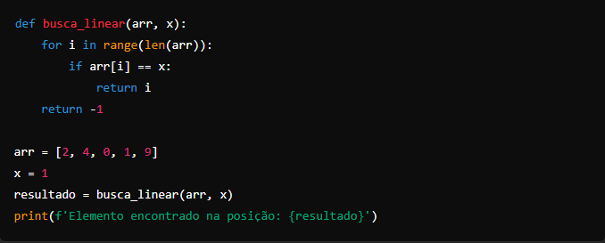
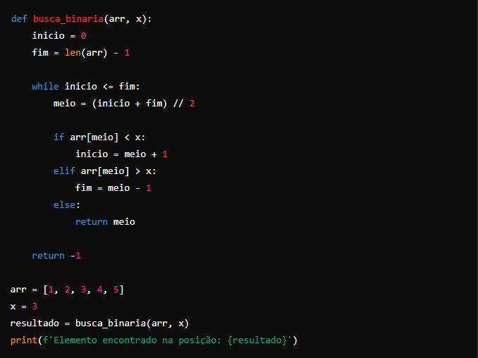
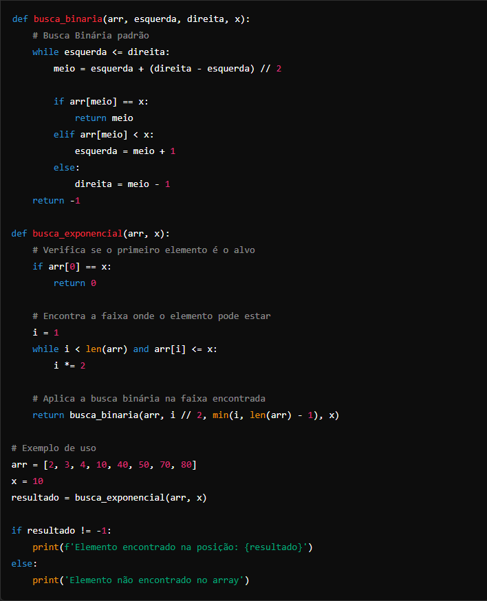

Algoritmos de Busca
BUSCA LINEAR
A busca linear percorre cada elemento da lista até encontrar o elemento desejado ou até que a lista termine.

BUSCA BINÁRIA
A busca binária funciona em listas ordenadas, dividindo repetidamente a lista ao meio e comparando o elemento do meio com o elemento buscado.

BUSCA EXPONENCIAL
A busca exponencial começa verificando o primeiro elemento. Se o elemento não for o alvo, ele verifica as potências de 2 (ou seja, 2, 4, 8, 16, etc.) até encontrar um intervalo onde o elemento poderia estar. Depois, ela aplica a busca binária nesse intervalo.

Como o algoritmo funciona:
Busca inicial: O algoritmo começa verificando se o primeiro elemento da lista é o alvo. Se for, ele retorna imediatamente.
Expansão exponencial: Ele continua verificando elementos em índices que são potências de 2 (i = 2, 4, 8, 16, etc.) até que o elemento verificado seja maior que o alvo ou até atingir o final da lista.
Busca binária: Após encontrar o intervalo onde o elemento poderia estar, o algoritmo realiza uma busca binária nesse intervalo para localizar o elemento exato.